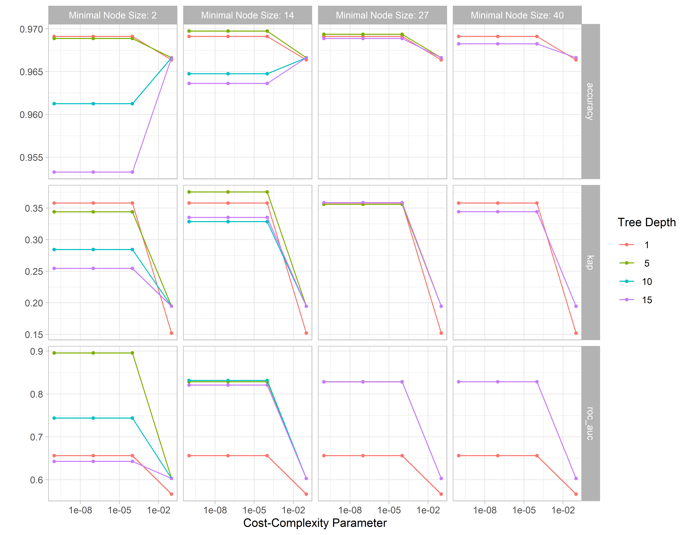

Arvores de Classificação - TidyModels
Carregando Bibliotecas
Manipulando os dados
#> default student balance income
#> No :9667 No :7056 Min. : 0.0 Min. : 772
#> Yes: 333 Yes:2944 1st Qu.: 481.7 1st Qu.:21340
#> Median : 823.6 Median :34553
#> Mean : 835.4 Mean :33517
#> 3rd Qu.:1166.3 3rd Qu.:43808
#> Max. :2654.3 Max. :73554# renomeando colunas
credito <- credito %>%
rename( inadimplente = default, estudante = student, balanco = balance,
receita = income)
credito <- credito %>% mutate( inadimplente = case_when(
inadimplente == "No" ~ "Nao",
inadimplente == "Yes" ~ "Sim"
)) %>% mutate(inadimplente = factor(inadimplente))
credito <- credito %>% mutate( estudante = case_when(
estudante == "No" ~ 0,
estudante == "Yes" ~ 1
)) Treino e Teste
set.seed(23)
credito_split <- initial_split(credito, 0.8, strata = inadimplente)
conj_treino <- training(credito_split)
conj_teste <- testing(credito_split)
credito_split#> <Training/Testing/Total>
#> <8000/2000/10000>Definindo o Modelo/Receita/Workflow
Treinando o modelo
Avaliando o modelo
metricas_credito <- metric_set(accuracy, sensitivity, specificity)
modelo_treinado %>%
predict(conj_teste) %>%
bind_cols(conj_teste) %>%
metricas_credito(truth = inadimplente, estimate = .pred_class)#> # A tibble: 3 × 3
#> .metric .estimator .estimate
#> <chr> <chr> <dbl>
#> 1 accuracy binary 0.974
#> 2 sensitivity binary 0.996
#> 3 specificity binary 0.348Matriz de confusão
Melhorando o modelo ajustando os parametros
Definindo a validação cruzada
set.seed(23)
credito_vldcruz <- vfold_cv(conj_treino, v=5, strata = inadimplente)
credito_vldcruz#> # 5-fold cross-validation using stratification
#> # A tibble: 5 × 2
#> splits id
#> <list> <chr>
#> 1 <split [6400/1600]> Fold1
#> 2 <split [6400/1600]> Fold2
#> 3 <split [6400/1600]> Fold3
#> 4 <split [6400/1600]> Fold4
#> 5 <split [6400/1600]> Fold5Definindo o grid de parâmetros
grid_AD <- grid_regular(cost_complexity(), tree_depth(),
min_n(), levels = 4)
grid_AD#> # A tibble: 64 × 3
#> cost_complexity tree_depth min_n
#> <dbl> <int> <int>
#> 1 0.0000000001 1 2
#> 2 0.0000001 1 2
#> 3 0.0001 1 2
#> 4 0.1 1 2
#> 5 0.0000000001 5 2
#> 6 0.0000001 5 2
#> 7 0.0001 5 2
#> 8 0.1 5 2
#> 9 0.0000000001 10 2
#> 10 0.0000001 10 2
#> # ℹ 54 more rowsAjustando o modelo
set.seed(23)
credito_rs <- tune_grid(
modelo_AD,
inadimplente ~ .,
resamples = credito_vldcruz,
grid = grid_AD,
metrics = metric_set(roc_auc, accuracy, kap)
)
credito_rs#> # Tuning results
#> # 5-fold cross-validation using stratification
#> # A tibble: 5 × 4
#> splits id .metrics .notes
#> <list> <chr> <list> <list>
#> 1 <split [6400/1600]> Fold1 <tibble [192 × 7]> <tibble [0 × 3]>
#> 2 <split [6400/1600]> Fold2 <tibble [192 × 7]> <tibble [0 × 3]>
#> 3 <split [6400/1600]> Fold3 <tibble [192 × 7]> <tibble [0 × 3]>
#> 4 <split [6400/1600]> Fold4 <tibble [192 × 7]> <tibble [0 × 3]>
#> 5 <split [6400/1600]> Fold5 <tibble [192 × 7]> <tibble [0 × 3]>Avaliando o modelo
collect_metrics(credito_rs)#> # A tibble: 192 × 9
#> cost_complexity tree_depth min_n .metric .estimator mean n std_err
#> <dbl> <int> <int> <chr> <chr> <dbl> <int> <dbl>
#> 1 0.0000000001 1 2 accuracy binary 0.969 5 0.00192
#> 2 0.0000000001 1 2 kap binary 0.358 5 0.0982
#> 3 0.0000000001 1 2 roc_auc binary 0.656 5 0.0434
#> 4 0.0000001 1 2 accuracy binary 0.969 5 0.00192
#> 5 0.0000001 1 2 kap binary 0.358 5 0.0982
#> 6 0.0000001 1 2 roc_auc binary 0.656 5 0.0434
#> 7 0.0001 1 2 accuracy binary 0.969 5 0.00192
#> 8 0.0001 1 2 kap binary 0.358 5 0.0982
#> 9 0.0001 1 2 roc_auc binary 0.656 5 0.0434
#> 10 0.1 1 2 accuracy binary 0.966 5 0.00147
#> # ℹ 182 more rows
#> # ℹ 1 more variable: .config <chr>autoplot(credito_rs) + theme_light(base_family = "IBMPlexSans")
Selecionando o melhor modelo
show_best(credito_rs, "kap")#> # A tibble: 5 × 9
#> cost_complexity tree_depth min_n .metric .estimator mean n std_err
#> <dbl> <int> <int> <chr> <chr> <dbl> <int> <dbl>
#> 1 0.0000000001 5 14 kap binary 0.375 5 0.0393
#> 2 0.0000001 5 14 kap binary 0.375 5 0.0393
#> 3 0.0001 5 14 kap binary 0.375 5 0.0393
#> 4 0.0000000001 10 27 kap binary 0.359 5 0.0346
#> 5 0.0000001 10 27 kap binary 0.359 5 0.0346
#> # ℹ 1 more variable: .config <chr>select_best(credito_rs, "kap")#> # A tibble: 1 × 4
#> cost_complexity tree_depth min_n .config
#> <dbl> <int> <int> <chr>
#> 1 0.0000000001 5 14 Preprocessor1_Model21modelo_final <- finalize_model(modelo_AD, select_best(credito_rs, "kap"))
modelo_final#> Decision Tree Model Specification (classification)
#>
#> Main Arguments:
#> cost_complexity = 1e-10
#> tree_depth = 5
#> min_n = 14
#>
#> Computational engine: rpartUsando o modelo final
ajuste_final <- fit(modelo_final, inadimplente ~ ., conj_treino)Avaliando o novo modelo
metricas_credito <- metric_set(accuracy, kap, specificity, sensitivity)
ajuste_final %>%
predict(conj_teste) %>%
bind_cols(conj_teste) %>%
metricas_credito(truth = inadimplente, estimate = .pred_class)#> # A tibble: 4 × 3
#> .metric .estimator .estimate
#> <chr> <chr> <dbl>
#> 1 accuracy binary 0.973
#> 2 kap binary 0.496
#> 3 specificity binary 0.406
#> 4 sensitivity binary 0.993ajuste_final %>%
predict(conj_teste) %>%
bind_cols(conj_teste) %>%
conf_mat(truth = inadimplente, estimate = .pred_class)#> Truth
#> Prediction Nao Sim
#> Nao 1918 41
#> Sim 13 28